pollinator moment
Bumblebee on catmint
A fuzzy bumblebee working purple catmint blooms, exactly the kind of small pollinator moment that makes the garden feel alive instead of merely planted.
Pollinators, beneficials, and little moments of life that make the garden feel active and real, including the occasional wild visitor passing through.
A fuzzy bumblebee working purple catmint blooms, exactly the kind of small pollinator moment that makes the garden feel alive instead of merely planted.
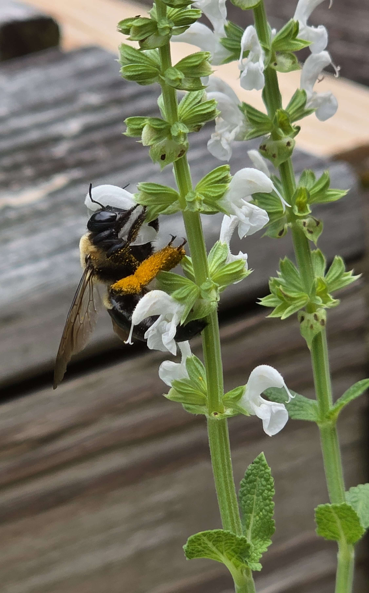
A heavy-laden bumblebee buried in the white salvia bloom, hind legs packed with orange pollen. Exactly the kind of close-up that shows how hard these garden workers are really going.

A sharper close-up of the same kind of summer pollinator moment, the black swallowtail showing off those cream spots, blue wash, and orange hindwing markings while feeding on the butterfly bush.
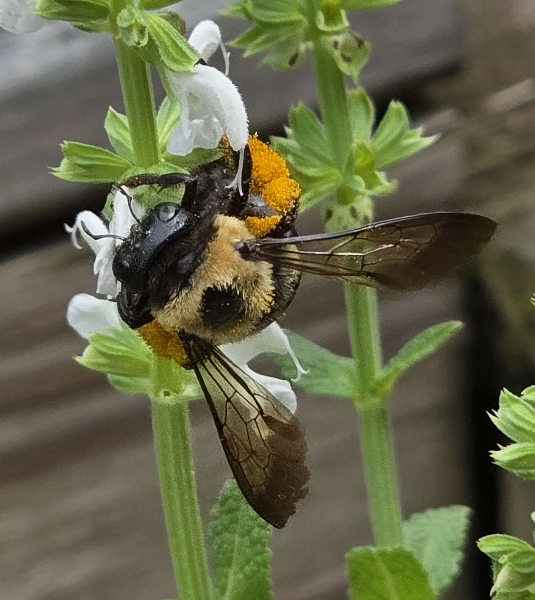
A fuzzy bumblebee buried in the salvia bloom, dusted with pollen and doing what it does best. One of those tiny garden scenes that makes the whole planting feel alive.
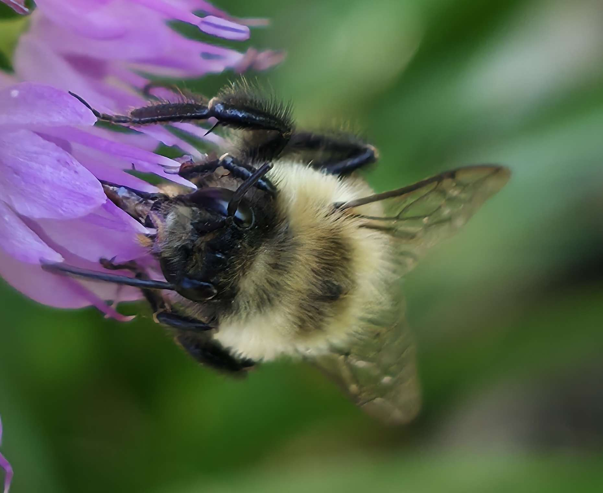
An intimate close-up of a bumblebee buried deep in a salvia bloom, showing the soft pollen coat, translucent wings, and the heavy-duty work these insects do in the garden.
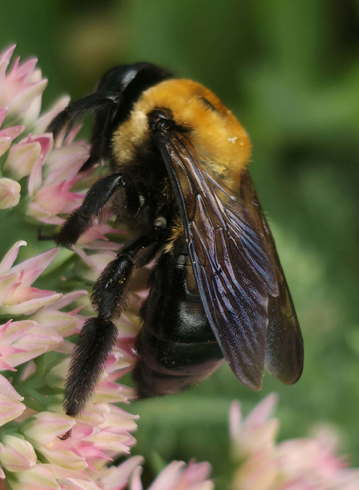
A richly detailed bumblebee hanging from a sedum bloom, pollen bright on its head and thorax while the wings catch light in a warm, glassy sheen.
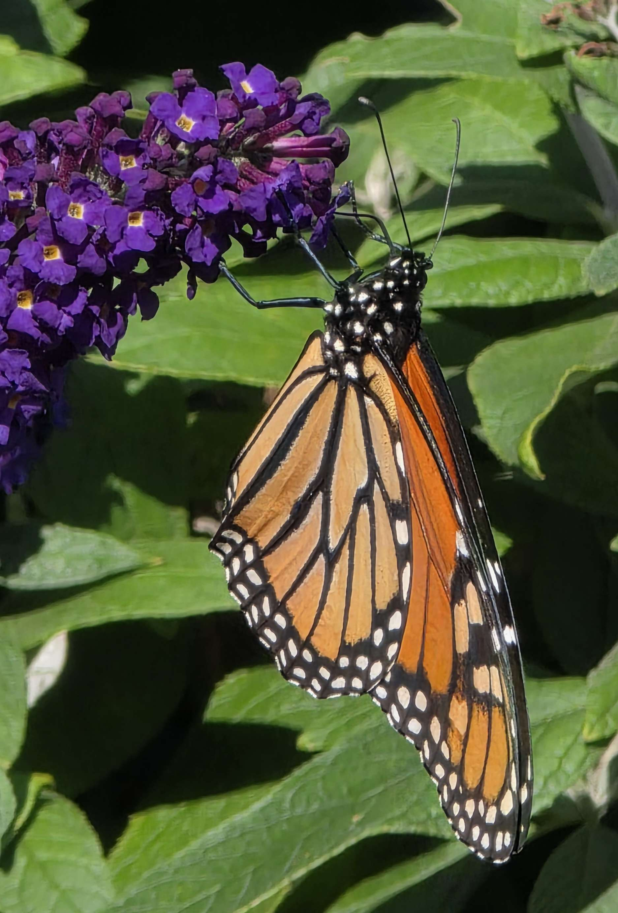
A monarch butterfly paused on the purple buddleia, wings edged in black and white, with that iconic orange-and-gold pattern glowing in the sun. A classic late-season pollinator moment.
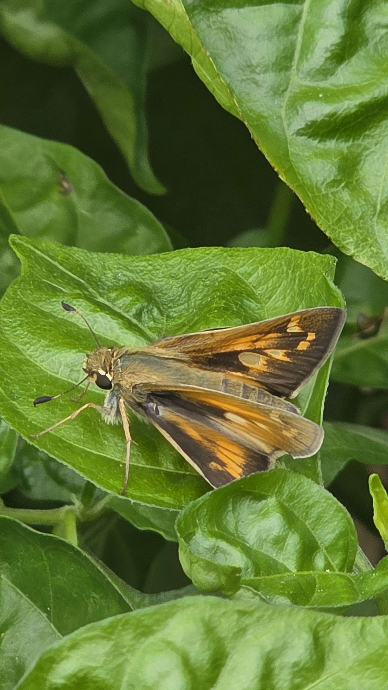
A warm-toned skipper resting on glossy green foliage, wings half-open and showing those bright orange patches that make skippers easy to miss until they settle in.
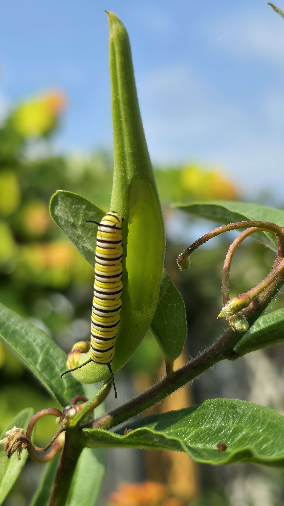
A pair of monarch caterpillars feeding on milkweed, striped and unmistakable, with the classic black-yellow-white banding that makes the whole plant feel like habitat instead of ornament.
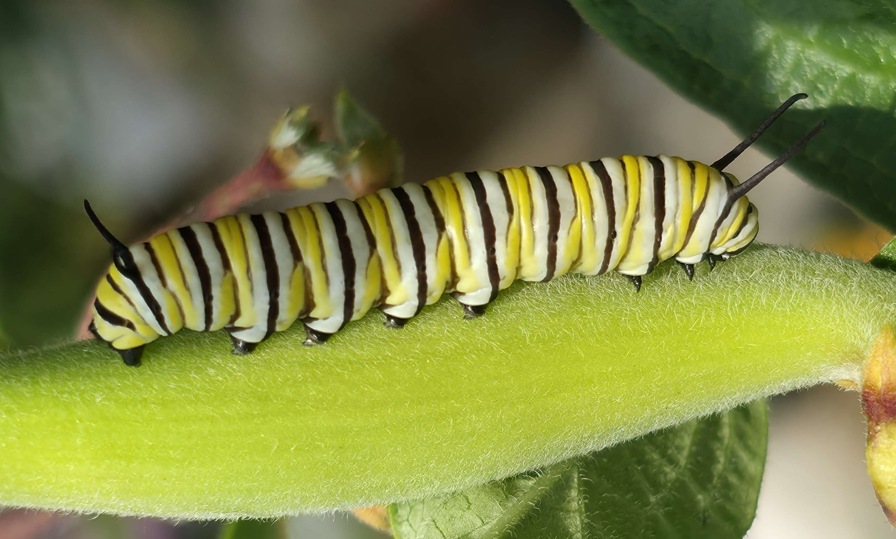
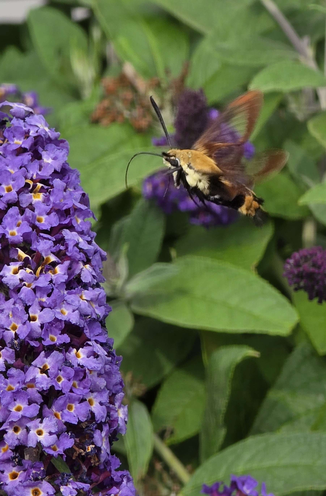
A fast-moving hummingbird moth hovering at the purple buddleia bloom, wings blurred in motion and body locked into the flower like a tiny airborne machine.
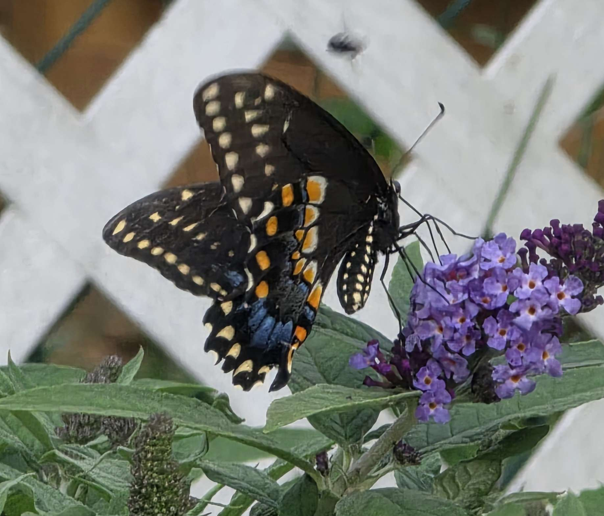
A close, detailed look at the swallowtail working the purple buddleia blooms, with the orange markings and cream spots on the wings showing clearly against the flower cluster.
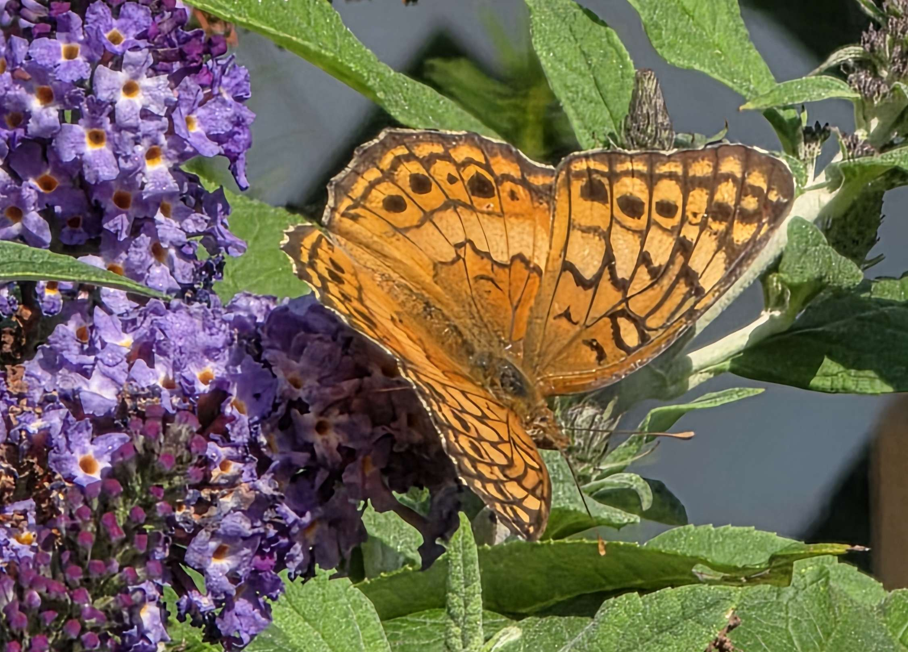
An orange fritillary butterfly drinking from purple buddleia blooms, wings spread bright against the flower spikes. The second frame catches the same butterfly from a slightly different angle, still locked onto the nectar source.
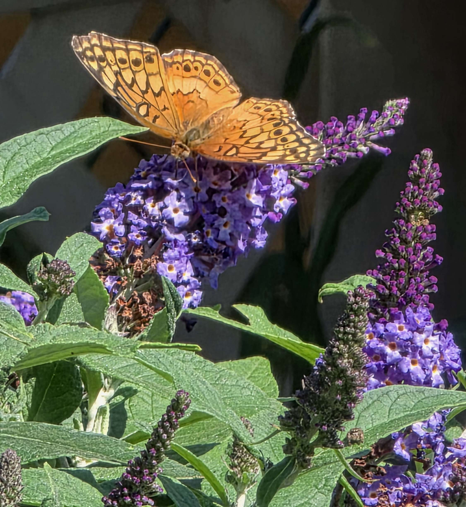

Likely an eastern gartersnake, slim, striped, and completely at home slipping through the mulch. A good reminder that the garden is not just planted space, it’s habitat.